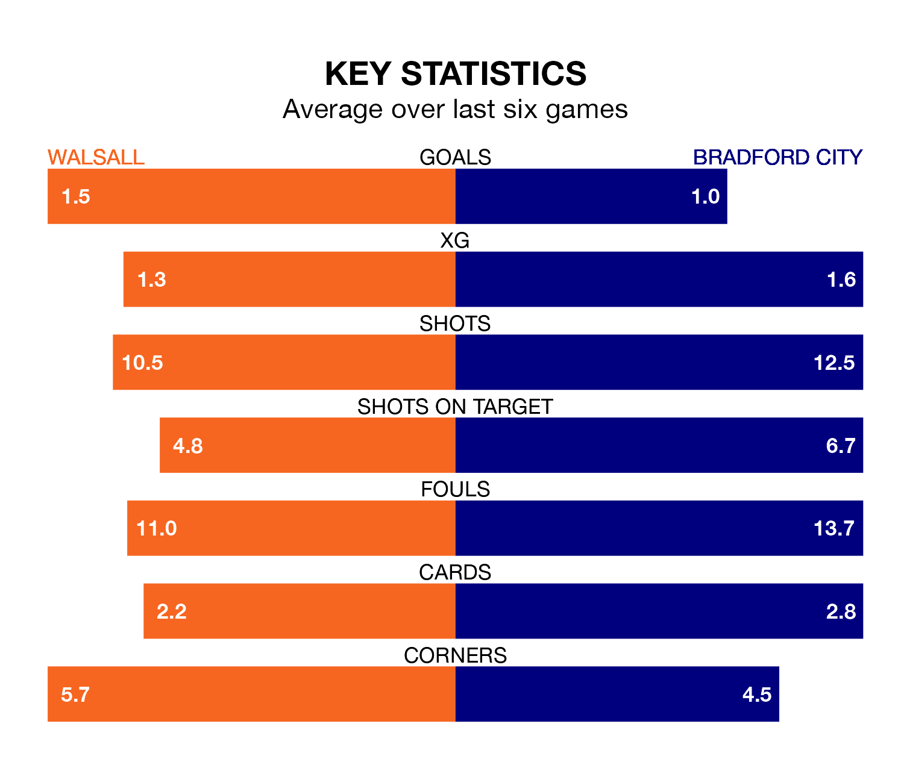

Bradford City travel to Walsall on Saturday in EFL League Two.
The visitors come into the game on the back of a win in their last match, having beaten Salford City 2-1 away, with goals from Brad Halliday and Calum Kavanagh.
The Saddlers also won their last match, 2-1 against Swindon Town, with their goals scored by Danny Johnson and Mo Faal.
In the last 10 years, Walsall and Bradford have played each other on 18 occasions. Walsall won three of them, Bradford seven, and they drew eight times.
On average, the Saddlers scored 1.1 goals and the Bantams 1.6 in those matches.
Their last meeting was on September 30, when Walsall won 3-1 away.
With 52 goals in 43 games so far this season, Bradford are the league's third-lowest scorers with 1.2 goals per game. But they are conceding fewer than average too, letting in 55 goals at a rate of 1.3 per game.
Walsall, meanwhile, are average scorers, with 1.5 goals per game. They have also conceded 1.5 goals per game.
The Saddlers are eighth in the table after 44 games, of which they have won 18 and drawn 11, earning 65 points.
City are five places behind the hosts in 13th, with 16 wins and 12 draws putting them on 60 points.
Walsall's Isaac Hutchinson is among the league's most creative players, racking up 10 assists in 44 appearances so far this season, and holding third spot in EFL League Two's assist charts.
For the Bantams, Andy Cook has set up the most goals, having laid on five assists in 38 games.
Walsall are in mixed form in EFL League Two, with three wins and three losses from their last six games.
With three wins and a draw over that period, the away side's form is slightly better – they have taken 10 points from 18, compared to the Saddlers's nine.
Updated: 15:40 (UTC), 18/04/24